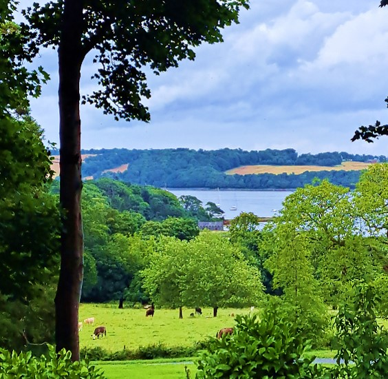

When we think of Ireland, the first images that come to mind are the famous Guinness beer, leprechauns and the highly celebrated St Patrick's Day celebrations.
The 'Emerald Isle', however, offers much more than all this: it is a magical country, full of places to discover.

-->